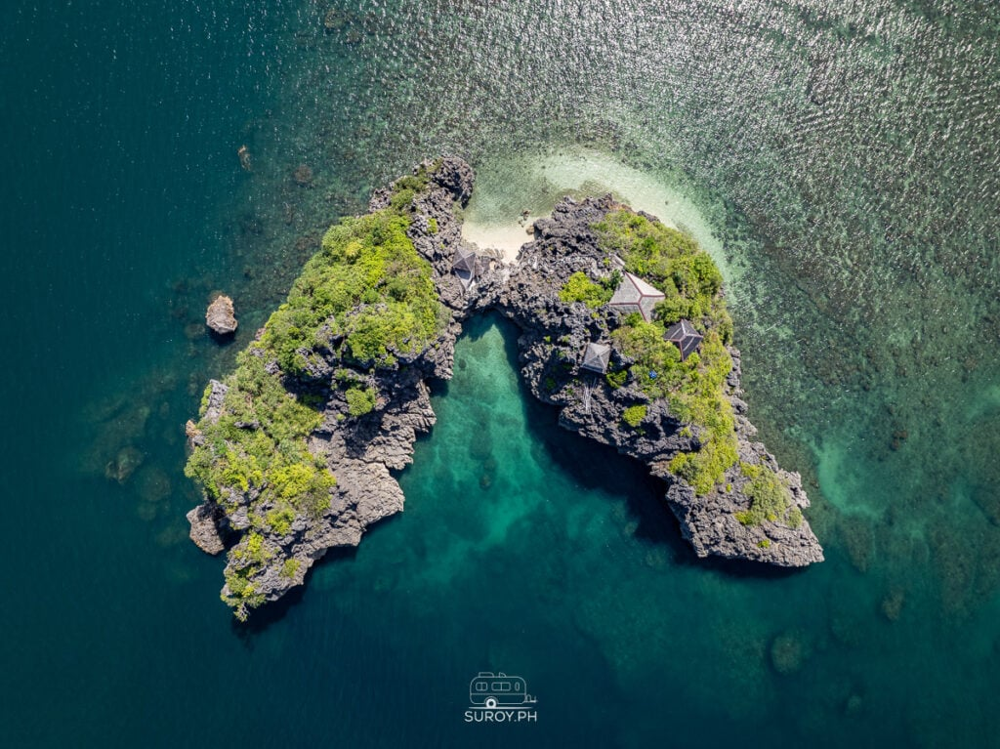

About Guimaras
Location, history, attractions, culture, and why you should visit.

Guimaras — The Sweet Island Province
Location
Guimaras is an island province in the Panay Gulf, Western Visayas region — situated between the islands of Panay and Negros. Its capital is Jordan. Accessible by a 15–25 minute ferry from Iloilo City.
Short Background / History
Formerly known as "Himal-os," Guimaras was visited by Spanish explorers as early as 1521. It became a sub-province of Iloilo on June 18, 1966, and gained full provincial status on May 22, 1992 through a successful plebiscite. By 1995, Sibunag and San Lorenzo were established as separate municipalities.
Known Attractions
Alubihod Beach, Balaan Bukid (Holy Mountain), Guisi Lighthouse, Our Lady of the Philippines Trappist Abbey, San Lorenzo Wind Farm, Roca Encantada, Navalas Heritage Church, and world-famous mango farms.
Culture and Traditions
The people of Guimaras, known as Ilonggos, are celebrated for their warm hospitality, bayanihan spirit, and deep faith. Culture is shaped by agriculture (especially mango farming), fishing, and vibrant religious traditions. Festivals like Manggahan and Pagtaltal showcase the province's unique identity.
Why Tourists Should Visit
Guimaras offers a rare combination of pristine beaches, world-class mangoes, rich colonial heritage, eco-tourism adventures, and genuine Filipino warmth — all within easy reach of Iloilo City. It is one of the most underrated island destinations in the Philippines.
The 5 Municipalities of Guimaras
Jordan (Capital)
Home to the Provincial Capitol, Trappist Abbey, Smallest Plaza, Balaan Bukid, and the Manggahan Festival.
Learn MoreBuenavista
Largest municipality. Known for Roca Encantada, Navalas Church, Daliran Cave, and coastal fishing traditions.
Learn MoreNueva Valencia
Home to Alubihod Beach, Guisi Lighthouse, Taklong Island Marine Reserve, and premier beach resorts.
Learn MoreSan Lorenzo
Features the Wind Farm, Holy Family Hills, Sapal Weaving Village, and MJ Grapes Farm agri-tourism.
Learn MoreSibunag
Peaceful southernmost municipality known for Us-Usan Reef Beach, Dasal Falls, and Costa Aguada Island Resort.
Learn MoreExplore All
Browse all tourist destinations across every municipality with our interactive search and category filters.
View Destinations